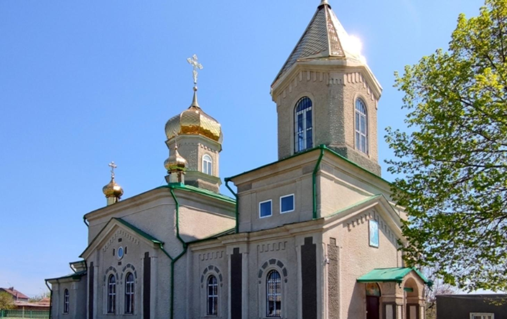
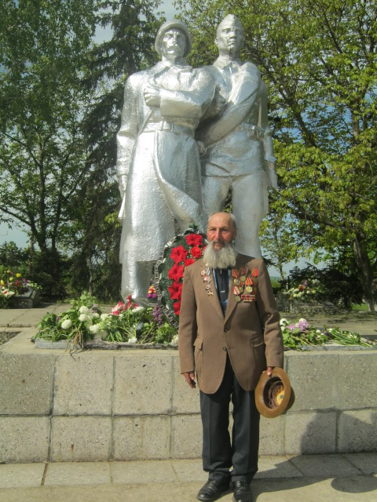
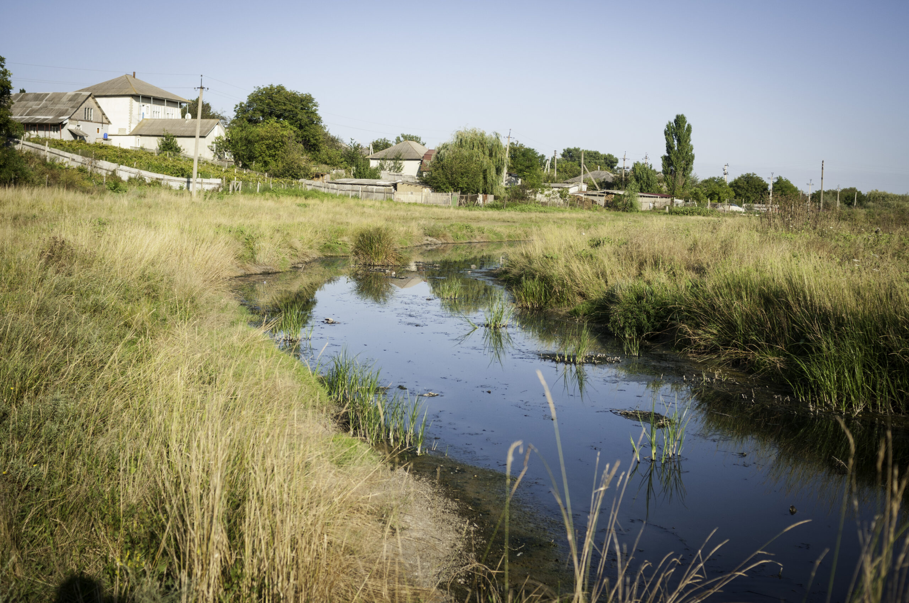

Explorează Bilicenii Vechi
Biserica "Sfinții Arhangheli Mihail și Gavriil"

Biserica Sfinții Arhanghel Mihail si Gavriil a fost ridicată în perioada 1897-1901, prin mari sacrificii. Cu eforturile comune ale tuturor consătenilor, s-a făcut cărămida din lut ars, s-a ridicat rând cu rând fiecare perete. Femeile, lucrau şi ele împreună cu bărbaţii, toată cărămida fiind adusă în spate pînă la zidurile Bisericii. Meșterii ridicau pereţii treptat, iar în mijlocul clădiri turnau pământ, ca să se lucreze comod până sus, pământul fiind utilizat pe post de schele. Alexandru Condrat Pascaru (1818-1903), a pus începutul unei dinastii de preoţiai Bisericii Ortodoxe din Bilicenii Vechi, cu numele de familie – Pascaru ( Pascari). După plecarea în eternitate a bătrânului preot, l-a moştenit fiul lui – Atanasie Pascaru (1845-1924).
Monumentul "Ostașii căzuți în al II-a război mondial

Memoria Recunoștinței: Monumentul Eroilor din Bilicenii Vechi Monumentele dedicate ostașilor căzuți în cel de-al Doilea Război Mondial nu sunt doar simple structuri din piatră sau beton, ci veritabile cărți de istorie deschise în inima comunităților. În satul Bilicenii Vechi, monumentul central reprezintă un punct cardinal al memoriei colective, legând prezentul de sacrificiul suprem al generațiilor trecute. Importanța acestui monument rezidă, în primul rând, în rolul său de spațiu al identității. Pentru localnici, acesta nu este un simbol abstract al unui conflict global, ci o listă de nume care se regăsesc și astăzi în registrele de stare civilă ale satului. Fiecare nume incizat în plăcile comemorative reprezintă un tată, un fiu sau un frate care nu s-a mai întors acasă, lăsând în urmă goluri ce au fost umplute, simbolic, prin ridicarea acestui obelisc.
Râul Ciuluc

Râul Ciulucul Mare este un afluent de stânga al râului Ciulucul Mic. Valea râului este slab șerpuitoare, cu lățimea de 0,5 km la izvor și se lărgește până la 5 km în cursul inferior. Albia râului este de 3-16 m neramificată, lățimea râului: 2-15 m; adâncimea: 0,1-0, m; viteza apei: 0,1 - 0,5 m/s. Situația hidrografică a râului Ciulucul Mare este degradată, ultimii ani acest râu din centrul Moldovei este parțial secat. Ecologia râului este într-o stare insalubră, gunoiști neautorizate sunt create spontan pe tot cursul râului și în bazinul acestuia.